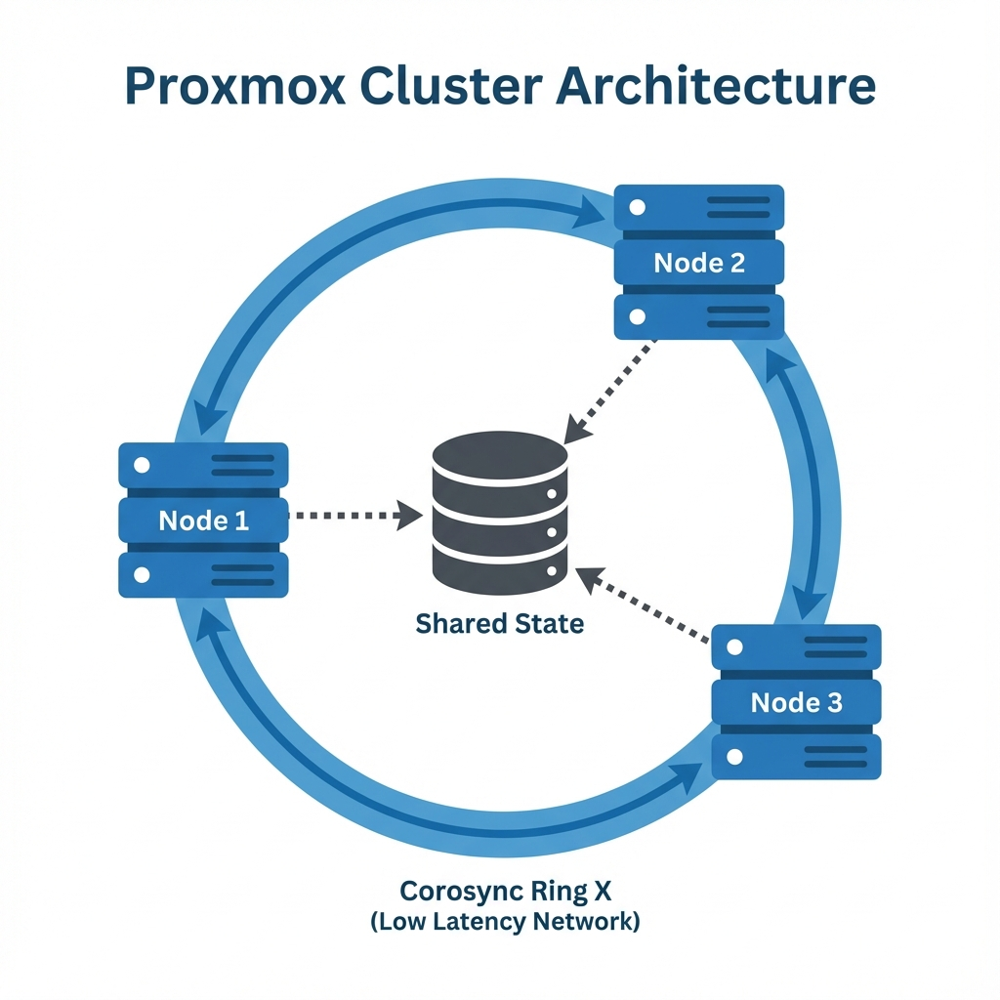
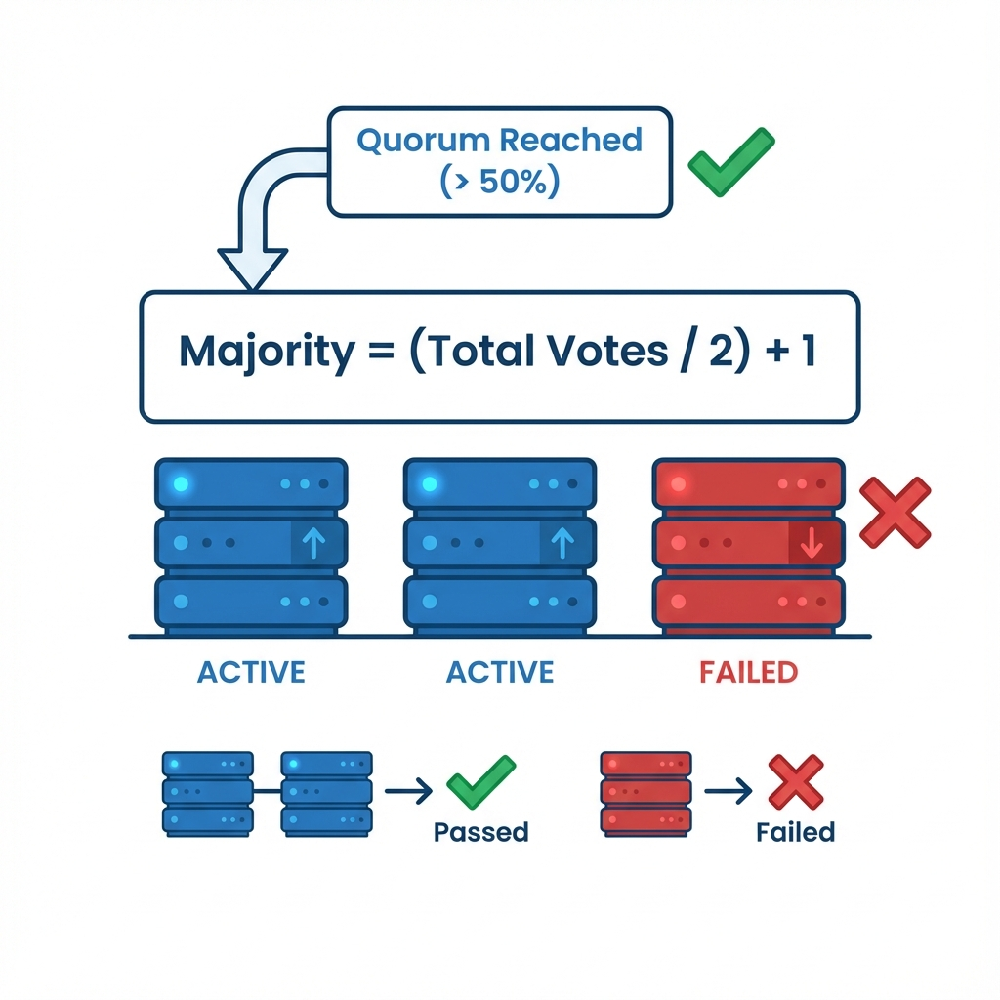
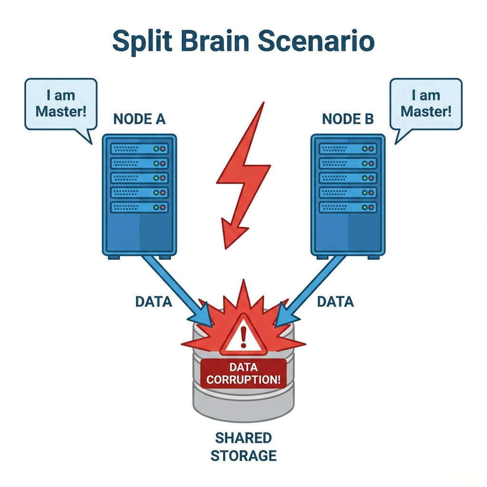
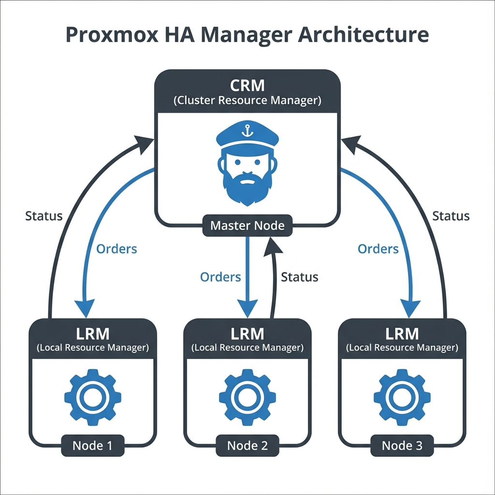
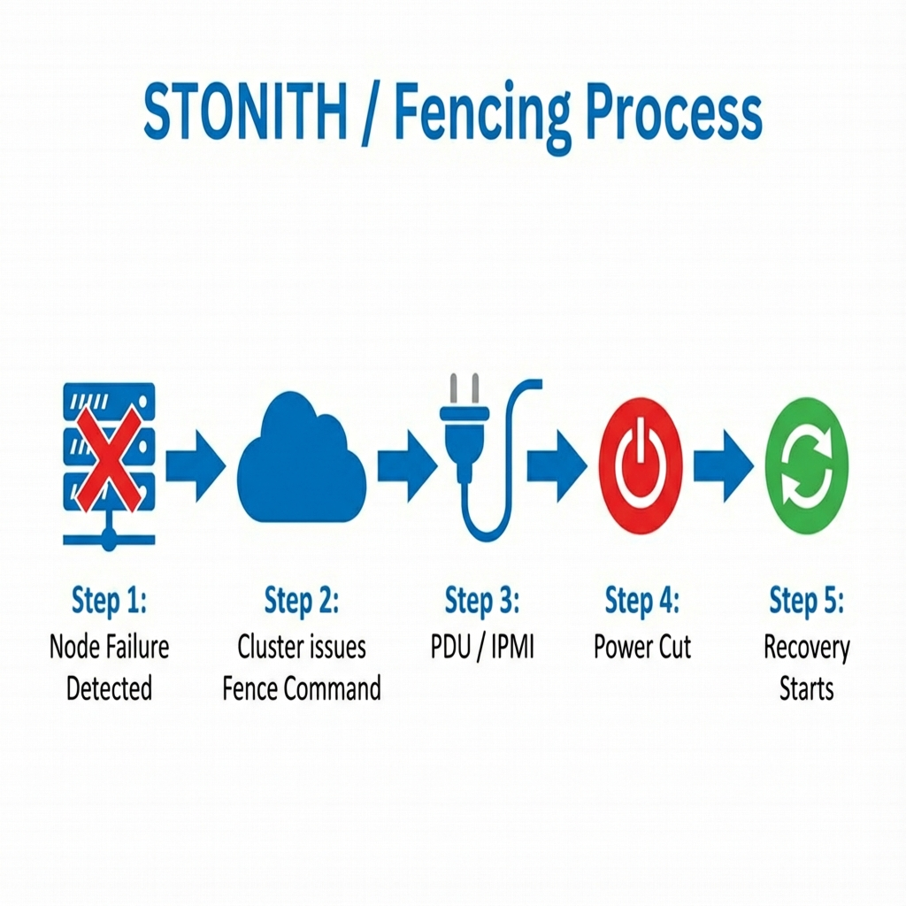
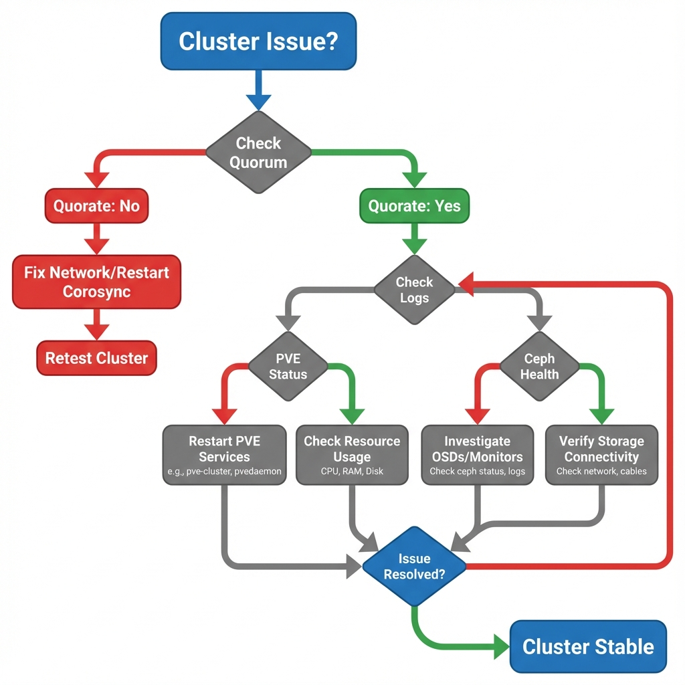
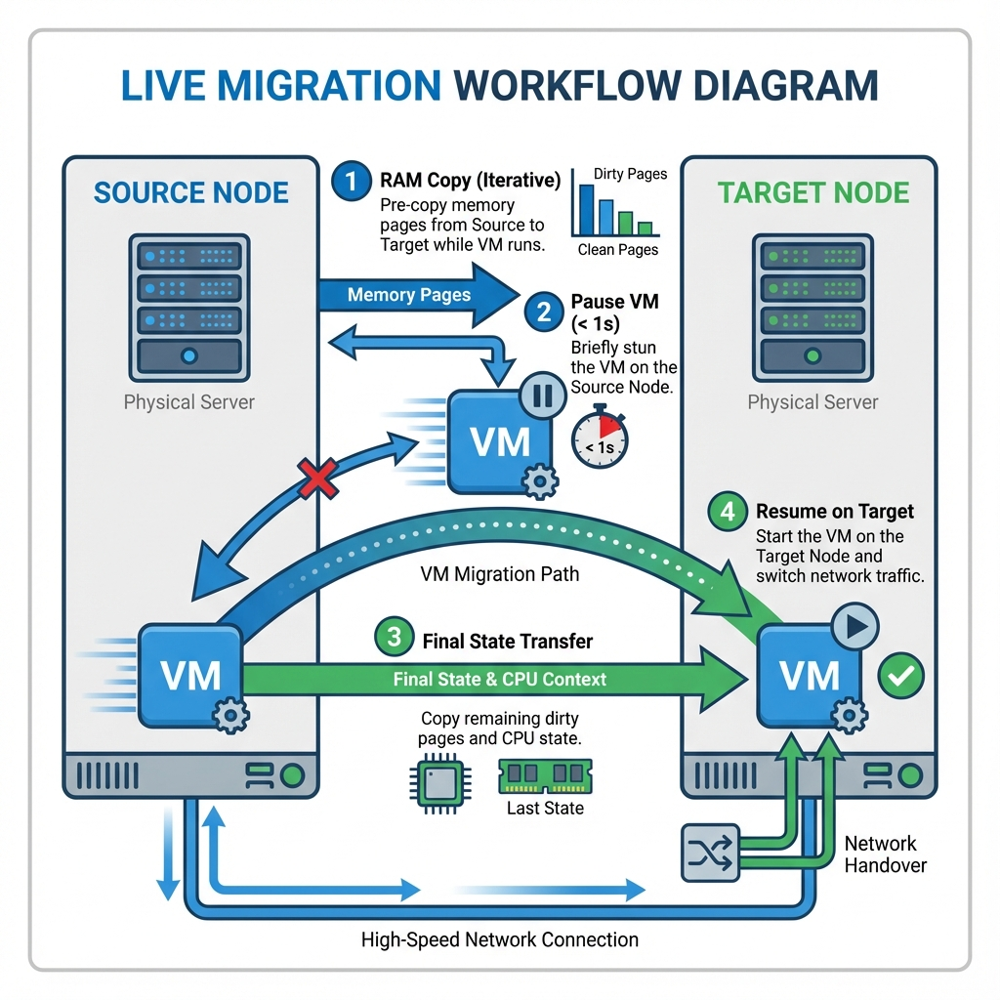

Cluster and High Availability
Student NotesCourse: Computer Systems Engineering Module: Operating Systems 3 (Virtualisation & Cloud Technologies) Topic: ClusterGroup of servers working together and High AvailabilitySystem design for minimal downtime (99.9%+ uptime) Estimated Reading Time: 30 Minutes
[!TIP] How to succeed in this week: Clustering is a complex topic where "split-brain" and "quorumMinimum nodes needed for cluster to function to function " are more than just buzzwords—they determine if your data survives a failure. We strongly recommend you strictly follow the lab exercises to build a 3-node clusterGroup of servers working together. Seeing a node fail and recover automatically in your lab will make these abstract concepts concrete.
Welcome to Week 6!
Up until now, our journey has focused on singular, standalone "pet" servers. We have treated each Proxmox platform combining KVM - A Hypervisor" class="glossary-term">Type 1 hypervisorA bare-metal hypervisor that runs directly on hardware and LXC node as an individual entity: if it fails, the virtual machines hosted on it fail with it, requiring manual intervention to restore service. This model is acceptable for home labs but insufficient for enterprise environments where uptime is critical. In a true Cloud Environment, servers are treated as "cattle"—interchangeable resources where the failure of one unit does not disrupt the overall system.
This week, we transition from standalone virtualization to Clustering. We will link multiple Proxmox platform combining KVM - A Hypervisor" class="glossary-term">Type 1 hypervisorA bare-metal hypervisor that runs directly on hardware and LXC nodes together to form a unified datacenter. We will explore the mechanics of the Quorum to function (the decision-making algorithm that maintains cluster integrity) and implement High Availability (HA - System design for minimal downtime ), ensuring that our workloads become resilient to physical hardware failure.
What You'll Learn This Week
- Cluster Management: We will master
pvecm, the command-line tool for creating, joining, and managing cluster nodes. - The Voting Algorithm: We will deconstruct the mathematical logic behind Quorum to function and how it prevents the catastrophic "Split Brain" scenario.
- Corosync engine for group communication Engine: We will examine the low-latency communication protocol that acts as the cluster's heartbeat.
- High Availability (HA - System design for minimal downtime ): We will configure Watchdogs and Fencing nodes to automate the recovery of VMs during node failures.
- Live Migration - A software-based emulation of a physical computer between hosts without downtime : We will perform the magic of moving running workloads between servers without dropping a single network packet.
Part 1: The Cluster Stack
At the heart of Proxmox platform combining KVM - A Hypervisor" class="glossary-term">Type 1 hypervisorA bare-metal hypervisor that runs directly on hardware and LXC VE's clustering capability lies the Corosync engine for group communication Cluster Engine. This crucial component provides the reliable, low-latency communication layer that allows nodes to share state. Proxmox platform combining KVM - A Hypervisor" class="glossary-term">Type 1 hypervisorA bare-metal hypervisor that runs directly on hardware and LXC Cluster Manager (pvecm) wraps this complex engine into a user-friendly toolset.
 Figure 1: Proxmox platform combining KVM - A Hypervisor" class="glossary-term">Type 1 hypervisorA bare-metal hypervisor that runs directly on hardware and LXC Cluster Architecture - Nodes communicating via Corosync engine for group communication Ring X on a dedicated low-latency network to maintain shared state
1. Creating a Cluster
While the web interface provides a convenient way to create clusters, understanding the Command Line Interface (CLI) is essential for troubleshooting and automation. The CLI exposes the underlying steps of key generation and configuration distribution.
1.1 Initialization
When you initialize a cluster, Proxmox platform combining KVM - A Hypervisor" class="glossary-term">Type 1 hypervisorA bare-metal hypervisor that runs directly on hardware and LXC performs several critical actions. It generates a cryptographic key (/etc/corosync/authkey) appearing to secure communication and creates the central configuration database (/etc/pve/corosync.conf). This database is essentially the "source of truth" for the entire cluster.
# Create a cluster named 'Education-Cloud'
pvecm create Education-Cloud
# Verify status to confirm the local node determines it is now part of a cluster
pvecm status
1.2 Joining a Node
Adding a second server is a "join" operation, not a creation operation. You instruct the new node to connect to the existing ring. The new node authenticates using the root password or an explicit join token, downloads the cluster keys and configuration files, and restarts its local services to synchronize with the quorum to function .
# Run this on Node 2
pvecm add 192.168.1.10 # IP of Node 1
Crucial Requirement: For a cluster to function correctly, every node must have a unique Hostname and a persistent Static IP address. If an IP address changes after the cluster is formed, Corosync engine for group communication communication will break, causing the node to lose quorum to function and effectively disconnecting it from the datacenter.
Section 1 Checkpoint
Summary:
- pvecm is the primary command-line tool for managing the cluster lifecycle, wrapping the underlying Corosync engine for group communication engine.
- Cluster Requirements are strict: nodes must have unique hostnames, static network configurations, and a reliable low-latency network connection.
- Joining involves a node authenticating to an existing cluster leader to download shared keys and configuration state.
Reflection:
- Why does Proxmox platform combining KVM - A Hypervisor" class="glossary-term">Type 1 hypervisorA bare-metal hypervisor that runs directly on hardware and LXC use SSH keys for cluster communication alongside Corosync engine for group communication keys?
- What is the impact on the cluster configuration file
/etc/pve/corosync.confif you change a node's IP address without updating it?
Resources:
2. Quorum to function : The Rule of Majority Algorithm
The most critical safety mechanism in any distributed system is Quorum to function . In the context of Proxmox platform combining KVM - A Hypervisor" class="glossary-term">Type 1 hypervisorA bare-metal hypervisor that runs directly on hardware and LXC , Quorum to function refers to the minimum number of votes required for the cluster to be considered "functional." This ensures that if the cluster fragments into disconnected pieces, only one piece—the majority—is allowed to modify state. This maintains data consistency and prevents divergent histories.
 Figure 2: Quorum to function Voting Logic - How the formula (Total/2)+1 determines the operational status of a cluster segment
2.1 The Split Brain Condition
"Split Brain" is a catastrophic failure state in a clustered environment where network communication is severed between nodes, yet the nodes themselves remain operational.
Consider a two-node cluster (Node A and Node B) where the heartbeat connection fails:
- The Divergence: Node A cannot see Node B and assumes Node B has failed. Simultaneously, Node B assumes Node A has failed.
- The Conflict: Both nodes promote themselves to "Master" status and attempt to take ownership of the same resources (e.g., VM - A software-based emulation of a physical computer ID 100).
- The Consequence: Both nodes mount the same shared storage volume and attempt to write data concurrently.
- The Result: Since they are unaware of each other's write operations, they overwrite each other's filesystem journals, leading to irreversible data corruption within milliseconds.
 Figure 3: Split Brain Scenario - A network cut leads to dual active masters ensuring data corruption without quorum to function logic
2.2 Quorum to function Logic
To prevent Split Brain, the Proxmox platform combining KVM - A Hypervisor" class="glossary-term">Type 1 hypervisorA bare-metal hypervisor that runs directly on hardware and LXC Cluster Manager (pvecm) enforces a strictly democratic requirement: operations can only proceed if a strict majority of nodes are present. The formula for this is (Total Votes / 2) + 1.
In a 2-Node Cluster, there are 2 total votes. The majority needed is (2/2) + 1 = 2. This implies that if a single node fails, the survivor has only 1 vote. Since 1 is less than 2, Quorum to function is lost. The surviving node essentially "locks down," forcing the filesystem into Read-Only mode to prevent any possibility of corruption.
In a 3-Node Cluster, there are 3 total votes. The majority needed is (3/2) + 1 = 2.5 (which rounds down to integer 2). If one node fails, the remaining two nodes have 2 votes. Since 2 equals 2, Quorum to function is maintained, and the cluster remains fully operational. This highlights the architectural best practice of always designing clusters with an ODD number of nodes (3, 5, 7) to allow for reliable tie-breaking.
Section 2 Checkpoint
Summary:
- Quorum to function enforces the "Rule of Majority" using the formula
(Total/2)+1to ensure only one part of a partitioned cluster remains active. - Split Brain occurs when disconnected nodes both attempt to become Master, leading to guaranteed data corruption.
- Safety Mechanism: If Quorum to function is lost, the cluster automatically locks down to Read-Only mode to preserve data integrity.
Reflection:
- Why is a 2-node cluster considered "dangerous" without an external vote (QDevice)?
- Does a "Majority" mean 51% (more than half) or exactly half?
Resources:
3. High Availability (HA - System design for minimal downtime ) Manager
Clustering provides a unified management interface, but it does not automatically guarantee uptime. If a node fails in a standard cluster, its VMs simply turn off. High Availability (HA - System design for minimal downtime ) is the automated subsystem designed to solve this problem. Its primary function is to detect physical hardware failures (such as power loss or kernel panic) and automatically restart the affected Virtual Machines on the remaining healthy nodes. This capability minimizes downtime from hours (waiting for an administrator to intervene) to minutes (automatic recovery).
 Figure 4: HA - System design for minimal downtime Manager Architecture - The Master CRM orchestrating Local LRMs to maintain service availability
3.1 Architecture Components
The HA - System design for minimal downtime system is composed of two primary agents that work in tandem to maintain service availability.
3.1.1 HA - System design for minimal downtime Resource Manager (CRM)
The Cluster Resource Manager (pve-ha-crm) acts as the "Cluster Manager" or the "Boss." It runs as a single active instance on the current master node. Its job is to maintain the state of the cluster and make high-level decisions about where services should live. If the node running the active CRM fails, the cluster automatically elects a new master to take over this role.
3.1.2 HA - System design for minimal downtime Local Resource Manager (LRM)
The Local Resource Manager (pve-ha-lrm) acts as the "Worker." An instance runs on every single node in the cluster. It receives orders from the CRM to start or stop services and reports the status of local resources back to the master. It is responsible for the actual execution of service management commands on the local hypervisor.
3.2 Fencing nodes Mechanism
The HA - System design for minimal downtime mechanism relies on absolute certainty. Before the cluster can steal VMs from a non-responsive node, it must be 100% sure that the node is truly dead.
3.2.1 The Split-Brain Problem
If Node A stops responding to heartbeats, Node B cannot know if Node A has crashed or if just the network cable was unplugged. If Node B starts Node A's VMs while Node A is still running them, both nodes would attempt to write to the same virtual disks simultaneously, guaranteeing severe data corruption.
3.2.2 The STONITH Solution
To solve this, we use Fencing nodes , often referred to by the acronym STONITH (Shoot The Other Node In The Head). Upon detecting a failure, the cluster issues a command to a physical hardware device (like an IPMI controller or a Smart PDU) to physically cut power to the faulty node. This guarantees the node is dead. Only after this confirmation does the cluster restart the VMs on healthy nodes.
 Figure 5: The Fencing nodes Process - How the cluster physically isolates a failed node before recovering its workloads
Section 3 Checkpoint
Summary:
- High Availability (HA - System design for minimal downtime ) automates the recovery of services by restarting VMs on healthy nodes after a hardware failure.
- CRM and LRM act as the "Manager" and "Worker" services, respectively, to orchestrate the monitoring and recovery process.
- Fencing nodes (STONITH) is the essential safety mechanism that physically powers off a non-responsive node to prevent Split Brain before recovery begins.
Reflection:
- Why is Fencing nodes (STONITH) safer than just assuming a silent node is down?
- Can you have High Availability without Shared Storage? (Consider the implications of ZFS Replication).
Resources:
Part 2: CLI Operations
4. Troubleshooting the Cluster
When cluster issues arise—typically indicated by red or gray nodes in the GUI—the web interface often lacks sufficient detail to diagnose the root cause. In these scenarios, the Command Line Interface becomes the primary diagnostic tool.
 Figure 6: Cluster Troubleshooting Flowchart - Decision tree for diagnosing Quorum to function , Corosync engine for group communication , and Network issues
4.1 Check Quorum to function
The first step in any cluster diagnosis is to verify the voting state. Run pvecm status to see the cluster's health from the perspective of the local node. Key fields to observe are Votes (number of nodes currently active) and Quorate. If Quorate is No, the cluster has lost its majority and will block any changes to the configuration database (pmxcfs) to prevent split-brain, effectively locking the cluster into a read-only mode.
pvecm status
4.2 Check Corosync engine for group communication
If nodes are not syncing but the network appears up, the issue often lies with Corosync engine for group communication latency. Use systemctl status corosync to check the service health. The logs will reveal if the "token retransmit time" is being exceeded. Corosync engine for group communication requires extremely low latency (typically < 2ms) to function correctly. High latency links, such as Wi-Fi or saturated 1Gbps uplinks during backups, often cause Corosync engine for group communication to drop packets and declare nodes dead falsely.
systemctl status corosync
4.3 Force Quorum to function (Emergency Only)
In a catastrophic scenario where you have a 2-node cluster and one node permanently fails, the survivor will lose quorum to function (1 vote < 2 required). To recover management capability on the survivor, you can artificially lower the expected vote count.
pvecm expected 1
Warning: This command tells the survivor, "Pretend we only expected 1 vote." This allows it to become quorate alone. You must only do this if you are absolutely certain the other node is dead. If the other node comes back online while this is active, you will cause a Split Brain scenario.
Section 4 Checkpoint
Summary:
pvecm statusis the primary diagnostic tool for assessing voting health and determining if the cluster is Quorate.- Corosync engine for group communication Latency is the most common cause of instability; high latency triggers false failure detection.
- Forcing Quorum to function (
expected 1) is a destructive emergency measure to recover a surviving node in a broken cluster.
Reflection:
- Why is latency (Ping time) so critical for Corosync engine for group communication compared to bandwidth?
- What does "Quorate: No" actually mean for your ability to start, stop, or migrate VMs?
Resources:
5. Live Migration - A software-based emulation of a physical computer between hosts without downtime CLI
Live Migration - A software-based emulation of a physical computer between hosts without downtime is the ability to move a running Virtual Machine from one physical node to another with zero downtime. It works by copying the VM - A software-based emulation of a physical computer 's active RAM state over the network to the destination node. Once the memory is synchronized, the hypervisor pauses the VM - A software-based emulation of a physical computer on the source node for a fraction of a second, transfers the final CPU state, and resumes execution on the destination node. To the user, this transition is seamless—network connections remain active, and applications continue running without interruption.
 Figure 7: Live Migration - A software-based emulation of a physical computer between hosts without downtime Workflow - Iterative RAM copy followed by atomic switchover for zero-downtime maintenance
# General Syntax: qm migrate <VMID> <TargetNode> [OPTIONS]
To perform this manually via the CLI:
# Migrate VM - A software-based emulation of a physical computer 100 to Node named 'pve2'
# --online: Keep it running (True Live Migration - A software-based emulation of a physical computer between hosts without downtime )
# --with-local-disks: Move the storage (disk image) too using storage migration
qm migrate 100 pve2 --online --with-local-disks
Section 5 Checkpoint
Summary:
- Live Migration - A software-based emulation of a physical computer between hosts without downtime moves active RAM state between nodes, allowing hardware maintenance without service interruption.
- --online ensures the VM - A software-based emulation of a physical computer remains responsive during the transfer; without it, the VM - A software-based emulation of a physical computer would hibernate and resume (offline migration).
- --with-local-disks enables migrations even without shared storage by copying the disk image alongside the RAM, though this takes significantly longer.
Reflection:
- What happens to the VM - A software-based emulation of a physical computer if the network cable is unplugged during the RAM copy phase of a migration?
- Why must the CPU Type often be set to
kvm64orhostmodel carefully in heterogeneous clusters?
Resources:
Part 3: Cluster Storage & Backups
6. Enterprise Shared Storage Architectures
6.1 Distributed Storage: Ceph (Advanced)
While ZFS is the gold standard for local storage, modern data centers often span multiple servers. Ceph is a massively scalable, distributed, self-healing file system that runs across a cluster of Proxmox platform combining KVM - A Hypervisor" class="glossary-term">Type 1 hypervisorA bare-metal hypervisor that runs directly on hardware and LXC nodes.
6.1.1 Architecture Components Ceph is not just software; it is a living ecosystem made of daemons:
- OSD (Object Storage Daemon): The workhorse. One OSD runs per physical disk. It handles reading, writing, and replicating data.
- MON (Monitor): The brain. It maintains the "Cluster Map"—the master list of which nodes are alive and where data lives. You usually need at least 3 MONs for quorum to function .
- MGR (Manager): Collects metrics and state for the GUI dashboard.
6.1.2 Implementation in Proxmox platform combining KVM - A Hypervisor" class="glossary-term">Type 1 hypervisorA bare-metal hypervisor that runs directly on hardware and LXC (HCI) Proxmox platform combining KVM - A Hypervisor" class="glossary-term">Type 1 hypervisorA bare-metal hypervisor that runs directly on hardware and LXC VE is unique because it integrates Ceph directly into the hypervisor (Hyper-Converged Infrastructure). You do not need external storage servers. The architecture diagram below shows how OSDs, MONs, and MGRs work together across a Ceph cluster:
 Figure 8: Ceph Distributed Storage - OSDs manage disks, MONs maintain cluster maps, and MGRs collect metrics across multiple nodes
Figure 8: Ceph Distributed Storage - OSDs manage disks, MONs maintain cluster maps, and MGRs collect metrics across multiple nodes
- Hardware Requirements: To be viable, you need at least 3 Nodes (for a 2/3 replica quorum to function ) and a 10GbE+ Dedicated Network (re-balancing data consumes massive bandwidth).
- The "Proxmox platform combining KVM - A Hypervisor" class="glossary-term">Type 1 hypervisorA bare-metal hypervisor that runs directly on hardware and LXC Way": You don't edit config files manually. You use the Proxmox platform combining KVM - A Hypervisor" class="glossary-term">Type 1 hypervisorA bare-metal hypervisor that runs directly on hardware and LXC Web GUI -> Datacenter -> Ceph to install packages, initialize the network, and create OSDs.
- Self-Healing: If a drive fails, Ceph detects the missing "Placement Groups" (PGs) and automatically re-replicates that data to other OSDs to restore full health.
6.2 External Shared Storage (SAN & NAS)
While Ceph is great for internal storage, many enterprises already have massive external storage arrays (SANs). Proxmox platform combining KVM - A Hypervisor" class="glossary-term">Type 1 hypervisorA bare-metal hypervisor that runs directly on hardware and LXC connects to these using standard protocols.
- Network Attached Storage (NAS): Uses NFS or SMB. The storage array manages the filesystem. Proxmox platform combining KVM - A Hypervisor" class="glossary-term">Type 1 hypervisorA bare-metal hypervisor that runs directly on hardware and LXC simply mounts a folder. It's easy, but effectively "Serial" (files are locked individually).
- Storage Area Network (SAN): Uses iSCSI or Fibre Channel. Proxmox platform combining KVM - A Hypervisor" class="glossary-term">Type 1 hypervisorA bare-metal hypervisor that runs directly on hardware and LXC sees a raw block device over the network.
- Parallel / Cluster File Systems: To allow multiple Proxmox platform combining KVM - A Hypervisor" class="glossary-term">Type 1 hypervisorA bare-metal hypervisor that runs directly on hardware and LXC nodes to mount the same SAN LUN simultaneously and write to it without corrupting data, we use a Clustered File System like GFS2 (Global File System 2) or OCFS2.
- Locking: These systems use a specialized Distributed Lock Manager (DLM) to ensure that if Node A is writing to a file, Node B knows about it instantly.
- LVM-Shared: Alternatively, Proxmox platform combining KVM - A Hypervisor" class="glossary-term">Type 1 hypervisorA bare-metal hypervisor that runs directly on hardware and LXC often uses LVM on top of iSCSI in "Shared Mode" to manage raw disk volumes for VMs without a full filesystem layer.
Section 6 Checkpoint
Summary:
- Ceph (HCI): Distributed, self-healing storage on compute nodes (3+ nodes req).
- SAN/NAS: External storage arrays. Block (iSCSI/FC) vs File (NFS).
- Cluster FS: GFS2/OCFS2 needed for simultaneous shared writes.
Reflection:
- Why is a 10GbE network mandatory for Ceph?
- What happens if two servers write to a standard ext4 non-clustered disk at the same time?
Resources:
7. Proxmox platform combining KVM - A Hypervisor" class="glossary-term">Type 1 hypervisorA bare-metal hypervisor that runs directly on hardware and LXC Backups (VZDump)
One of the most persistent dangerous misconceptions in cloud infrastructure is equating a Snapshot - A software-based emulation of a physical computer state for rollback with a Backup.
7.1 Backups (VZDump) vs Snapshots
- Snapshot - A software-based emulation of a physical computer state for rollback : A point-in-time "difference file" linked to the original disk. Dependent.
- Backup (VZDump): A comprehensive, independent archive (config + compressed disk data, e.g.,
.vma.zst). It can be moved offsite for disaster recovery.
 Figure 9: Snapshot - A software-based emulation of a physical computer state for rollback vs. Backup - Snapshots are dependent save points for testing; Backups are independent archives for disaster recovery
Figure 9: Snapshot - A software-based emulation of a physical computer state for rollback vs. Backup - Snapshots are dependent save points for testing; Backups are independent archives for disaster recovery
7.2 Proxmox platform combining KVM - A Hypervisor" class="glossary-term">Type 1 hypervisorA bare-metal hypervisor that runs directly on hardware and LXC Backup Modes
When performing a backup, the state of the VM - A software-based emulation of a physical computer determines the consistency of the data.
 Figure 10: Proxmox platform combining KVM - A Hypervisor" class="glossary-term">Type 1 hypervisorA bare-metal hypervisor that runs directly on hardware and LXC Backup Modes - Live (Snapshot - A software-based emulation of a physical computer state for rollback ), Suspend (Frozen), and Stop (Consistent) modes balance uptime vs. data consistency
Figure 10: Proxmox platform combining KVM - A Hypervisor" class="glossary-term">Type 1 hypervisorA bare-metal hypervisor that runs directly on hardware and LXC Backup Modes - Live (Snapshot - A software-based emulation of a physical computer state for rollback ), Suspend (Frozen), and Stop (Consistent) modes balance uptime vs. data consistency
- Snapshot - A software-based emulation of a physical computer state for rollback Mode (Live): No downtime. Uses QEMU - A Hypervisor" class="glossary-term">Type 1 hypervisorA bare-metal hypervisor that runs directly on hardware for virtualization to pause writes for a microsecond. Ideal for production.
- Suspend Mode: Brief pause. Good for consistency but disrupts services.
- Stop Mode: Full power off. 100% consistent, maximum downtime.
Section 7 Checkpoint
Summary:
- Backup: Independent Archive, essential for DR.
- Modes: Snapshot - A software-based emulation of a physical computer state for rollback (Live), Suspend (Frozen), Stop (Consistent).
8. Managing Storage via CLI (pvesm)
Advanced troubleshooting often requires the **Proxmox platform combining KVM - A Hypervisor" class="glossary-term">Type 1 hypervisorA bare-metal hypervisor that runs directly on hardware and LXC VE Storage Manager`.
# 1. Edit the Storage Configuration file
nano /etc/pve/storage.cfg
# 2. List all configured storage
pvesm status
# 3. Allocating a volume manually
pvesm alloc local-lvm 100 vm-100-disk-1 20G
Section 8 Checkpoint
Summary:
pvesmhelps when the GUI is unavailable.storage.cfgis the cluster-wide storage definition file.
9. Additional Resources
- Cluster Manager Wiki: Proxmox Docs
- HA - System design for minimal downtime Simulator: PVE HA Sim
- Corosync engine for group communication Overview: ClusterLabs
10. Lab Exercises
- Lab: Cluster & HA
- Goal: Building a Multi-Node Cluster, configuring HA - System design for minimal downtime , and Live Migration - A software-based emulation of a physical computer between hosts without downtime .
Test Your Knowledge
Ready to check your understanding of this week's material? Take the interactive quiz now!
Start Quiz